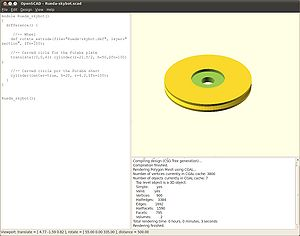
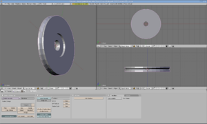
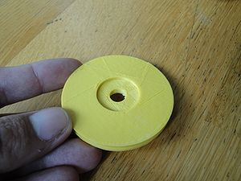
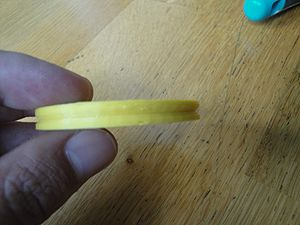
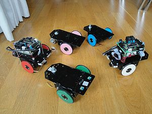
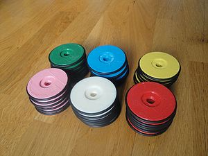
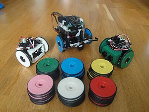
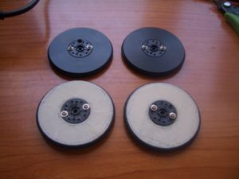

Introducción

Rueda del Skybot (G3, v2.0) diseñada con OpenScad

Rueda del Skybot (G3, v1.0) diseñada con Blender
Las ruedas actuales del Skybot (G2) están fabricadas con un torno. Por ello, hay que recurrir a un taller mecánico para su construcción. Sin embargo, la versión G3 está diseñada para ser "impresa" en una impresora 3D. Para hacer los prototipos no es necesario recurrir a un taller, sino que se pueden imprimir en tu propia casa si tienes una impresora del tipo Reprap o Cupcake.
El acabado es un poco tosco, pero la rueda cumple su cometido perfectamente.
La versión G3 es un derivado de la G2. Tiene las mismas dimensiones
Información
| Dimensiones |
55mm de diámetro y 6mm de grosor
|
| Material |
ABS (Acrilonitrilo Butadieno Estireno) Es el mismo plástico de las piezas de Lego
|
| Peso |
10 gr (peso de la rueda completa montada)
|
| Tiempo de impresión |
27 minutos
|
| Tiempo de montaje |
3 minutos
|
Instrucctiones de montaje
Descargas
Version 2.0
- Diseñada con OpenScad 2010-05
- Gcode generado con Replicatorg 0020 (perfil cupcake mk5 abs, skeinforge 006)
Versión 1.0
- Diseñada con Blender
- Impresa con Cupcake de Makerbot, extruder MK3
Historia
- Ruedas G3 (Tercera generación)
- Son similares a las G2 pero "imprimibles" en una impresora 3D, como una Reprap o Cupcake.
- V2.0:
- 29/Dic/2010: "impresas" 36 ruedas (Blog)
- 28/Nov/2010: Rueda utilizada para el robot MiniSkybot (Blog)
- 06/Nov/2010: Diseñada con OpenScad, Impresa y probada (Blog)
- V1.0: 29/Julio/2009: Diseñada en Blender, Impresa y probada (Blog)
- Ruedas G2 (Segunda generación)
- Feb-2006: Creadas para el taller de robótica de la Universidad Autónoma de Madrid. Están fabricadas en un torno y usan una goma tórica para la adherencia
- Ruedas G1 (Primera generación)
- Julio/2005: Creadas para la versión del skybot que se empleó en el taller de Campus Party 2005. Son círculos de plástico, cortados por láser. Es necesario poner un goma de un globo para lograr la adherencia al suelo.
Fotos
Versión 2.0
 Rueda Sin montar. Vista frontal ( Click para ampliar) |
 Rueda sin montar. Vista lateral ( Click para ampliar) |
|
|
 Skybots con las ruedas montadas ( Click para ampliar) |
 36 Ruedas, de diferentes colores ( Click para ampliar) |
 36 ruedas, junto a un Skybot y dos Mini-Skybots ( Click para ampliar) |
Version 1.0
|
|
 Comparación entre las ruedas G2 y G3 ( click para ampliar) |
Videos
- Video en el que se puede ver el Skybot en acción con las ruedas G3 v1
Repositorio
Enlaces
Autores
Licencia
Noticias
- 29/Dic/2010: Fabricadas 36 ruedas, de distintos colores (Blog)
- 14/Nov/2010: Nueva versión de las ruedas hecha con OpenScad
- 29/Julio/2009: Primera versión de esta página